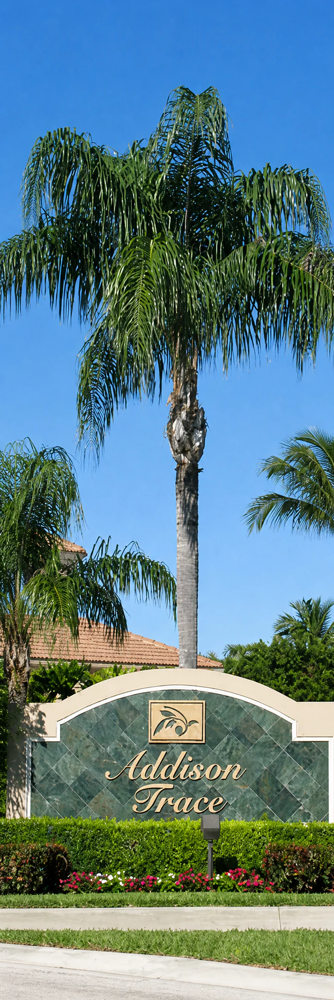
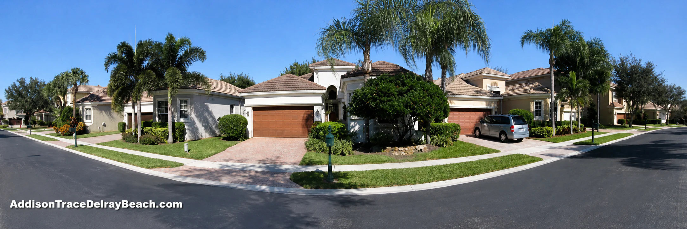
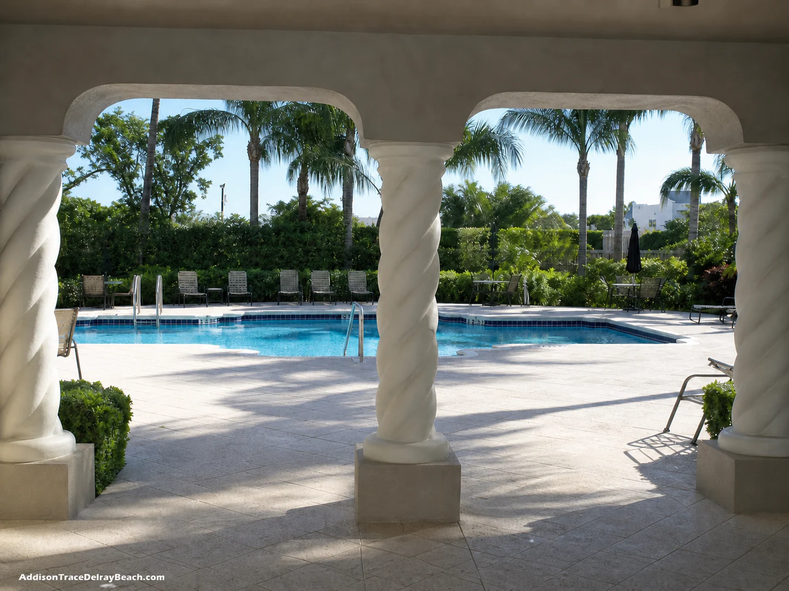
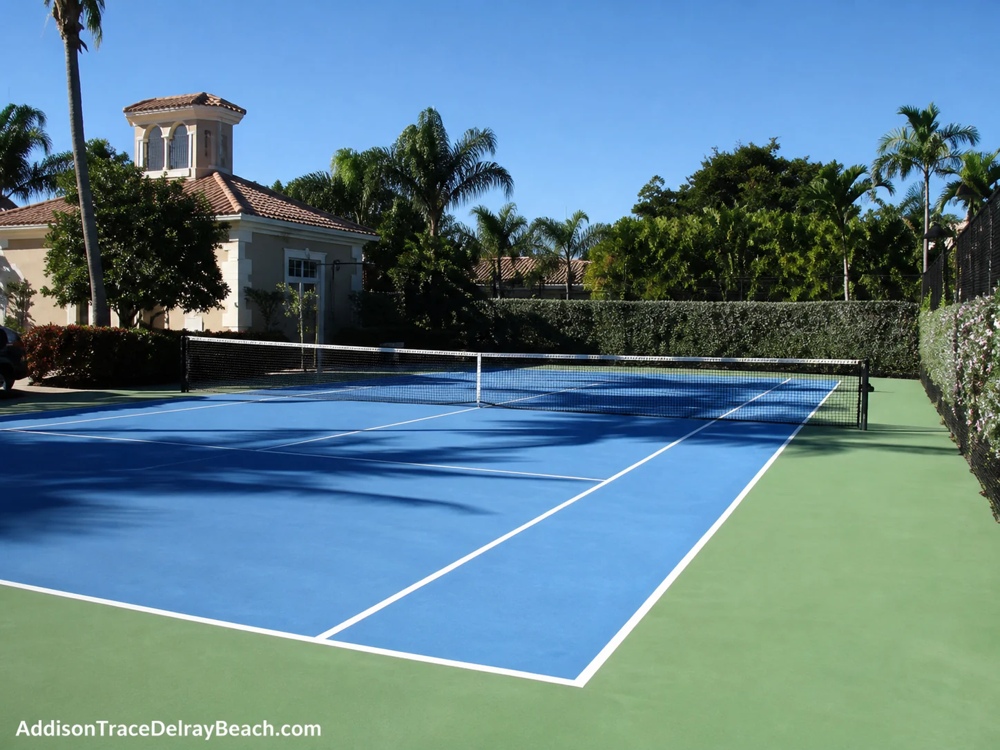

Welcome to Addison Trace
A premier single family home community
Addison Trace is a private gated neighborhood of single family homes and coach homes in Delray Beach, Florida.
Residents enjoy a peaceful setting near well known country club communities while remaining close to shopping, dining, medical services, and the coast.
Homes in the community
Homes for sale
Addison Trace offers a mix of two bedroom coach homes and three or four bedroom single family homes. Many single family homes include two car garages and approximately 1,800 to 2,400 square feet of air conditioned living space.
Availability and prices change regularly. Please call or view the current listings for the latest information.

About the neighborhood
Established homes in a convenient location

Addison Trace was built from the late 1990s through the early 2000s. The neighborhood provides choices for buyers who want an attached coach home or a larger single family residence.
The secured entrance and community recreation area make Addison Trace an appealing option for buyers looking for comfort and convenience in central Delray Beach.
Community features
Amenities for everyday enjoyment
- Secured community entrance
- Large swimming pool
- Heated spa
- Tennis court
- Fitness center
- Private recreation center


Delray Beach, Florida 33484
Area information
Addison Trace is centrally located in Delray Beach, minutes from the dining and shopping along Atlantic Avenue and roughly five miles from the ocean.
The community is also near Delray Medical Center and many everyday shopping and service options.
Open map and directionsDirections
From Interstate 95: Take Linton Boulevard west to Sims Road, then turn left into the community.
From Florida’s Turnpike: Exit at Atlantic Avenue and head east. Turn right at Jog Road, then left on Linton Boulevard and right at Sims Road.

We are here to help
Would you like to see Addison Trace?
Call or text Brenda Brooks, Broker at One Step Ahead Realty, to ask a question or arrange a convenient time to visit.
Call (561) 951 7332